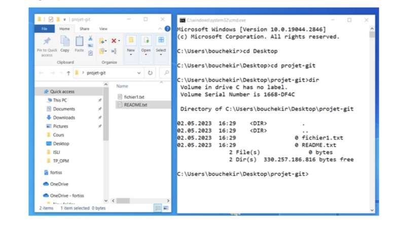

1) Introduction:
Dans ce chapitre, nous introduisons Git et GitHub afin de clarifier leur utilité. Git est un logiciel de versioning créé en 2005 par Linus Torvalds, le créateur de Linux.
Il permet de conserver un historique des modifications effectuées sur un projet, facilitant ainsi la gestion de projets et le travail d'équipe.
Git est le leader incontesté parmi les logiciels de gestion de versions.
2) Utilité d'un système de gestion de version:
Un système de gestion de version permet de conserver un historique des modifications d'un projet. Par exemple, lorsque vous modifiez un site web, vous devez effectuer une sauvegarde du site avant l'implémentation pour pouvoir le restaurer en cas de problème. Si plusieurs développeurs travaillent sur le même projet, la coordination devient plus complexe. Un système de gestion de version permet de mettre en place un serveur distant qui contient l'historique des modifications effectuées par chaque développeur, permettant ainsi une meilleure collaboration.
3) Modèles de logiciels de gestion de version:
modèle centralisé vs modèle décentralisé: Il existe deux modèles principaux de logiciels de gestion de version : le modèle centralisé et le modèle décentralisé. Dans le modèle centralisé, le code source est hébergé sur un serveur central, et les utilisateurs doivent se connecter à ce serveur pour travailler sur le code. Dans le modèle décentralisé, chaque utilisateur télécharge et héberge le code source sur sa propre machine. Git est basé sur le modèle décentralisé, offrant ainsi plus de simplicité, de flexibilité et de sécurité.
4) Qu'est-ce que GitHub?
Git est un logiciel de gestion de version, tandis que GitHub est un service en ligne d'hébergement de dépôts Git. GitHub est le plus grand hébergeur de dépôts Git au monde. Il permet d'héberger des dépôts Git, et une grande partie de ces dépôts sont publics, ce qui permet à n'importe qui de télécharger le code et de contribuer au développement des projets.
5) Utilisation de Git:
ligne de commande, console et interface graphique: Il est possible d'utiliser différentes interfaces pour installer et utiliser Git. Dans ce cours, nous utiliserons la ligne de commande plutôt qu'une interface graphique. Cela permet d'avoir accès à toutes les commandes Git et assure que tous les utilisateurs peuvent suivre le cours de la même manière.
6) Installation de Git:
La façon la plus simple d'installer Git est de télécharger la dernière version sur le site officiel
http://git-scm.com/downloads, puis de suivre les instructions à l'écran en laissant les valeurs par défaut.
7) Configuration de Git:
Une fois Git installé, il est nécessaire de le configurer en fournissant certaines informations, telles que le nom d'utilisateur et l'adresse e-mail. Cela se fait en utilisant la commande git config. En utilisant l'option --global, les informations fournies seront utilisées globalement pour tous les projets Git. Il est possible de vérifier si les informations ont bien été enregistrées en utilisant les commandes git config user.name et git config user.email.
8) Démarrer un dépôt Git :
- une copie des fichiers d'un projet dans Git.
- Un dépôt Git estIl existe deux façons de créer un dépôt Git : l'importation d'un répertoire existant ou le clonage d'un dépôt Git existant.
9) La gestion des informations selon Git :
- Git considère les données comme des instantanés ou des "snapshots".
- Lorsqu'un projet est enregistré dans Git, un instantané du contenu de l'espace de travail est pris et une référence à cet instantané est enregistrée.
- Chaque instantané est stocké localement dans une base de données.
- La plupart des opérations de Git peuvent être effectuées localement, ce qui les rend rapides et agréables.
10) Les états des fichiers :
- Un fichier peut être suivi ou non suivi dans Git.
- Un fichier suivi appartient au dernier instantané enregistré par Git, tandis qu'un fichier non suivi n'appartient pas au dernier instantané et n'a pas été indexé.
- Lors de la création d'un dépôt Git en important un répertoire existant, les fichiers sont initialement non suivis.
- Lors du clonage d'un dépôt Git existant, les fichiers sont déjà suivis par défaut.
- Un fichier suivi peut être dans l'un des trois états suivants : modifié, indexé ou validé.
11) Les zones de travail :
- Les états des fichiers sont liés à des zones de travail dans Git.
- Un projet Git est composé de trois sections :
- Le répertoire de travail : contient les fichiers extraits de la base de données Git.
- La zone d'index : stocke les informations sur ce qui fera partie du prochain instantané.
- Le répertoire Git : stocke les méta-données et la base de données des objets du projet.
12) Créer un dépôt Git à partir d'un répertoire existant :
- Pour créer un dépôt Git à partir d'un répertoire existant, utilisez la commande git init.Cela crée un sous-répertoire .git qui contient les fichiers nécessaires au fonctionnement du dépôt Git.

- Utilisez la commande git status pour vérifier l'état des fichiers du répertoire.
- Utilisez la commande git add pour indexer les fichiers et la commande git commit pour les valider et les ajouter à la base de données Git.
- Lorsque vous utilisez la commande git commit sans argument, une nouvelle fenêtre s'ouvre en utilisant l'éditeur par défaut, qui est généralement VIM. Dans ce cas, vous êtes invité à ajouter un message à votre commit. Documenter chaque commit de manière appropriée permet aux auteurs et aux contributeurs d'un projet de comprendre rapidement les modifications et de les valider. C'est une partie essentielle de Git. Dans cet exemple, le message ajouté est simplement "Version initiale du projet".
- Une fois que vous avez saisi votre message, si vous utilisez VIM comme éditeur, vous devez appuyer sur la touche esc pour quitter le mode d'insertion, puis taper :wq suivi de la touche Entrée pour valider et quitter. Vous pouvez également utiliser :x suivi de la touche Entrée ou simplement ZZ.
- Si vous exécutez à nouveau la commande "git status" après cela, vous verrez le message suivant : Git vous informe qu'il n'y a plus aucun fichier non suivi , ce qui signifie que tous les fichiers sont sous suivi de version et enregistrés dans la base de données, et qu'aucune modification n'a été apportée à ces fichiers depuis le dernier commit.
13) Cloner un dépôt Git :
Une autre façon de démarrer un dépôt Git est de cloner localement un dépôt Git déjà existant. Pour cela, vous pouvez utiliser la commande git clone. Après avoir créé un dépôt sur GitHub, vous pouvez transmettre vos fichiers à ce dépôt en utilisant les commandes suivantes : git branch -M main (pour changer le nom de la branche principale en "main"), git remote add origin [URL du dépôt GitHub] (pour ajouter le dépôt distant comme origine) et git push -u origin main (pour pousser les modifications locales vers le dépôt distant).
14) Ajouter ou modifier des fichiers dans un projet et actualiser notre dépôt Git :
Lorsque vous travaillez sur votre projet, vous serez amené à ajouter, modifier ou supprimer des fichiers. Pour enregistrer ces changements dans le dépôt Git, vous devez utiliser les commandes git add et git commit. Il est important de noter que le commit d'un fichier est basé sur l'état du fichier au moment de l'exécution de la commande git add. Ainsi, si vous effectuez un git add sur un fichier, puis le modifiez à nouveau avant de faire un git commit, seule la version du fichier au moment du dernier git add sera enregistrée. Pour enregistrer la dernière version de tous les fichiers modifiés et déjà suivis, vous pouvez utiliser la commande git commit -a.
15) Consulter l'historique des modifications Git :
La commande git log permet de consulter l'historique des modifications Git. Elle affiche la liste des commits effectués du plus récent au plus ancien, avec des informations telles que la somme de contrôle SHA-1, le nom de l'auteur, l'e-mail, la date et le message du commit.
16) Annuler des modifications apportées à un fichier :
L'un des avantages principaux de l'utilisation d'un système de gestion de version comme Git est la possibilité d'annuler des modifications et de revenir à un état précédent d'un projet.
Après un commit, si vous souhaitez revenir à l'état précédent d'un fichier enregistré dans Git, vous pouvez utiliser la commande générale git checkout -- nom-du-fichier ou la commande spécialisée git restore.
17) Qu'est-ce qu'une branche ?
Une branche dans Git est simplement un pointeur vers un commit spécifique. Contrairement à d'autres systèmes de contrôle de version, Git n'effectue pas de copie physique complète du répertoire de travail lors de la création d'une branche.
Une branche est un fichier contenant l'empreinte SHA-1 du commit sur lequel elle pointe. Par défaut, la branche principale dans Git s'appelle master et se déplace automatiquement à chaque nouveau commit.
Une branche n'est pas spéciale dans Git, elle est traitée de la même manière que les autres branches. Lorsque vous initialisez un dépôt Git avec la commande git init, une branche est automatiquement créée et nommée master, mais vous pouvez la renommer si vous le souhaitez.
En résumé, créer une nouvelle branche dans Git crée simplement un nouveau pointeur vers un commit spécifique, sans recopier l'intégralité du répertoire de travail.